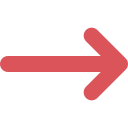

keliones i heraklion | kreta keliones | kelione i kreta viskas iskaiciuota | poilsines keliones i kreta | keliones i kreta paskutine minute | kreta heraklionas | kelione i heraklion | kelione i lisabona | lisabona lankytinos vietos | keliones i lisabona | skrydziai i lisabona | vilnius lisabona tiesioginis skrydis | tiesioginiai skrydziai i lisabona | pigus skrydziai i lisabona | vilnius roma autobusas | kelione i roma | skrydziai i roma | pigios keliones i roma | kelione i roma autobusu | pazintine kelione i roma | kelione i roma dviems | keliones i roma | keliones i venecija | kelione i venecija | savaitgalio kelione i venecija | pigios keliones i venecija | kelione i venecija lektuvu | kelione i venecija autobusu | kelione i milana | savaitgalis milane | pigios keliones i milana | savarankiska kelione i milana | insbrukas lankytinos vietos | kelione i insbruka | keliones i insbruka | skrydziai i insbruka | kelione i neapoli | keliones i neapoli | skrydziai i neapoli | tiesioginiai skrydziai i neapoli | pigus skrydziai i neapoli | skrydziai i atenus | pigus skrydziai i atenus | tiesioginiai skrydziai i atenus | kelione i atenus | savaitgalis atenuose | keliones i atenus | kelione i zanzibara | keliones i zanzibara | vilnius zanzibaras tiesiogiai | skrydziai i zanzibara | Kelione i sicilija | Keliones i sicilija | skrydis i sicilija | skrydziai i sicilija | keliones i sicilija rudeni | pazintine kelione i sicilija | kelione i sicilija paskutine minute | poilsines keliones i sicilija | Kelione i verona | Keliones i verona | skrydis i verona | ka pamatyti veronoje
Ekspromtu.lt – tai kelionių agentūra, siūlanti platų kelionių pasirinkimą į populiarias ir įdomias vietas visoje Europoje ir pasaulyje. Organizuojame poilsines ir pažintines keliones į Kretą, Heraklioną, Lisaboną, Romą, Veneciją, Milaną, Insbruką, Neapolį, Atėnus, Zanzibarą, Siciliją, Veroną ir kitus nuostabius miestus. Mūsų paslaugos apima „viskas įskaičiuota“ paketus, paskutinės minutės pasiūlymus ir tiesioginius skrydžius. Ieškantiems pigesnių alternatyvų, taip pat siūlome autobuso keliones. Pasitikėkite mumis ir atraskite nuostabias vietas su patogiais skrydžiais ir profesionaliu aptarnavimu!
PREKINTIS
pigus skrydziai i lisabona
Kelionė į Lisaboną - Patarimai ir Lankytinos Vietos
Lisabona – tai miestas, kuris žavi tiek istorijos mylėtojus, tiek keliautojus, ieškančius įspūdingų kraštovaizdžių ir kultūrinės patirties. Jei planuojate kelionę į šią Portugalijos sostinę, svarbu žinoti ne tik apie lankytinas vietas, bet ir kaip patogiai pasiekti šį miestą
pigios keliones i milana
Kelionė į Milaną: Savaitgalis Stiliaus ir Kultūros Širdyje
Kelionė į Milaną – puiki galimybė pabėgti nuo kasdienybės ir mėgautis kultūros, mados ir skanaus maisto sostine. Nesvarbu, ar esate istorijos mėgėjas, mados entuziastas ar tiesiog norite praleisti nuostabų savaitgalį, Milanas siūlo viską. Be to, šiais laikais vis dažniau galima rasti pigios kelionės į Milaną pasiūlymų, kurie leis jums išnaudoti šią galimybę neištuštinant piniginės.
skrydziai i sicilija
Atraskite Siciliją: Kelionės Rudens Sezonui
Ruduo – puikus metas kelionėms, o Sicilija yra viena tų vietų, kurios traukia tiek istorijos, tiek nuostabių gamtos vaizdų gerbėjus. Neabejotina, kad kelionė į Siciliją suteiks jums ne tik poilsį, bet ir galimybę pažinti šio krašto kultūrinį paveldą. Nesvarbu, ar planuojate poilsinę kelionę, ar domina pažintinė kelionė, Sicilija turi ką pasiūlyti visiems keliautojams.
kelione i roma autobusu
Atraskite Romos grožį: kaip suplanuoti nepamirštamą kelionę
Roma – amžinasis miestas, kuriame istorija susipina su šiuolaikiniu gyvenimu, kviečia jus atrasti savo žavesį. Nesvarbu, ar esate kelionių mėgėjas, ar tiesiog ieškote ypatingos vietos poilsiui, kelionė į Romą bus pilna įspūdžių.
Ar turite klausimų dėl mūsų produktų, pristatymo proceso ar mokėjimo būdų?
Adresas:
Maironio g. 4, Utena
28241, Lietuva